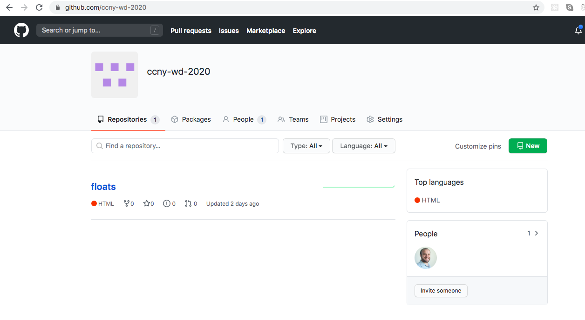
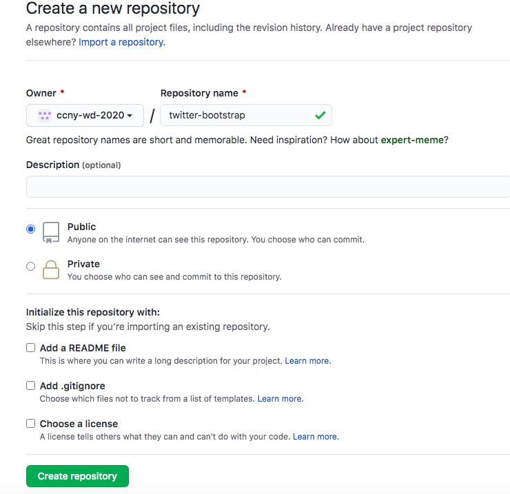
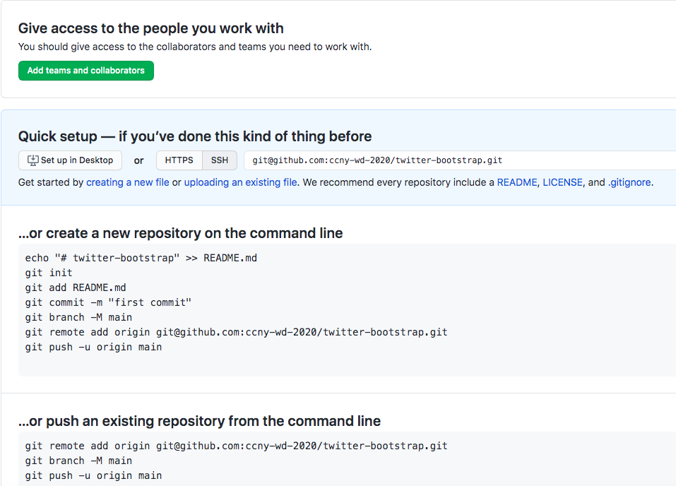

Creating a Github Repository without a README
-
Go to your Github home page, github.com/{github_user_name}, and click on the "new" green button
 -
Have your "Create a new repository" page look just like below, and click on the green "Create Repository" button
 -
Once created, this is what your new repository page should look like
